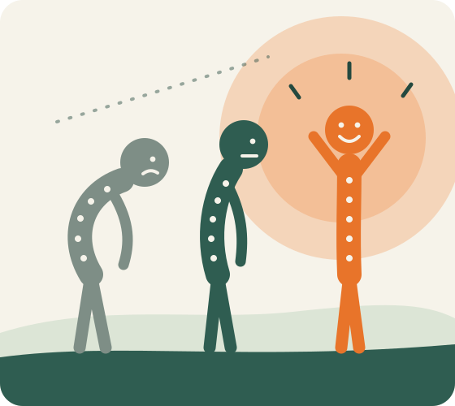
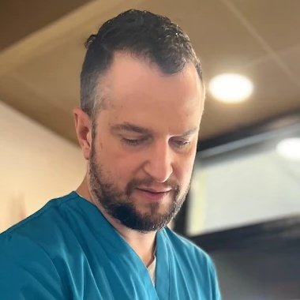

Che
Postura!
Due professionisti.
Un solo percorso: il tuo.
Si parte dai dati della tua postura. Uno valuta e tratta, poi insieme lavoriamo sul tuo corpo e ricontrolliamo i risultati. Perché il dolore non torni.

Forse questo giro lo hai già fatto
Chi ha un problema di postura, o un dolore che torna, di solito passa da una tappa all'altra. Ogni tappa ha senso da sola. Il guaio è che nessuno le mette insieme.
- Arriva il doloreSchiena, collo, spalle. Aspetti che passi, poi cerchi qualcuno che ti aiuti.
- Qualche sedutaUn professionista ti tratta. Stai meglio, e per un po' te ne dimentichi.
- Un corso qualsiasiTi dicono di muoverti. Ti iscrivi in palestra o a un corso: esercizi uguali per tutti.
- Il dolore tornaDopo qualche settimana o qualche mese sei al punto di partenza. E ricominci, da un'altra parte.
Il risultato, per molte persone: pochi miglioramenti, o nessuno che duri.
Non perché i singoli professionisti lavorino male. Ma perché ognuno vede solo il suo pezzo, e il corpo è uno solo.Manca il lavoro d'équipe
La postura dipende da tante cose insieme: muscoli, articolazioni, appoggio dei piedi, bocca, respiro, abitudini. Nessun professionista da solo le copre tutte. E se quelli che ti seguono non si parlano, il lavoro di uno non arriva all'altro.
- Nessuno ha il quadro completo. Chi ti tratta non sa cosa fai in palestra. Chi ti allena non sa cosa è stato trovato.
- Racconti la tua storia ogni volta da capo, e ogni volta un po' diversa.
- Gli esercizi non partono dal tuo problema. Sono generici, e a volte rinforzano proprio il compenso.
- Niente viene misurato. Senza dati di partenza non si può sapere se la postura è cambiata davvero.
- Si cura il punto che fa male, non la causa. Che spesso sta da un'altra parte.
Un percorso in cinque passi, tutti collegati
Ogni passo usa quello che è emerso nel precedente. Niente si perde per strada, e tu sai sempre a che punto sei.
Valutazione
Prima di toccare, si capisce. Davide guarda come ti muovi dalla testa ai piedi e con i test muscolari cerca perché ti fa male, non solo dove.
Dati posturali
Un programma di analisi posturale misura e registra la tua postura. I problemi si vedono tutti, nero su bianco, e restano come punto di partenza per i confronti futuri.
Trattamento
Con il lavoro manuale Davide scioglie le tensioni e i blocchi emersi. Il dolore cala e muoversi torna possibile.
Esercizi su misura
Davide passa a Morena cosa c'è e cosa ha fatto. Lei costruisce gli esercizi sulla tua valutazione e sui tuoi dati posturali: Pilates, corpo libero, allenamento funzionale, respiro. Sa cosa rinforzare e cosa rispettare, dalla prima lezione.
Ricontrollo
Si rimisura la postura e si confronta con i dati di partenza. Vedi cosa è cambiato, si aggiusta il lavoro e il progetto sulla tua postura va avanti da lì.
Non due percorsi affiancati: un lavoro solo, fatto in due
Chi ti allena sa cosa ha trovato chi ti ha trattato. Chi ti tratta sa come stai rispondendo al movimento. È questo scambio continuo a produrre il terzo risultato: quello che dura.
- Vai da uno per il dolore e da un altro per muoverti: tra loro non si parlano
- Racconti la tua storia ogni volta da capo
- Esercizi generici, uguali per tutti
- Nessuna misura: non sai se la postura è cambiata davvero
- Si parte da una valutazione e da dati misurati
- Chi ti tratta dice a chi ti allena cosa c'è e cosa ha fatto
- Esercizi costruiti su ciò che è emerso
- Si ricontrolla, e il progetto sulla tua postura continua
Chi lavora sulla tua postura
Due professionisti che ti seguono in prima persona, e due studi che entrano in gioco quando la causa sta dove il trattamento e il movimento da soli non arrivano.

Dott. Davide Scuderi
Valuta, misura e tratta. È lui che tiene il filo del percorso: raccoglie i dati di partenza, decide con te la direzione e ricontrolla i risultati.
Dott.ssa Morena Anastasi
Trasforma la valutazione in esercizi tuoi: Pilates a terra e sui macchinari, corpo libero, allenamento funzionale, respiro. Empatica e motivante, anche se parti da zero.
Studio per i bite posturali
A volte la causa parte dall'alto: bocca, mandibola, modo di chiudere i denti. Da lì la tensione scende lungo collo, spalle e schiena. In questi casi collaboriamo con uno studio che realizza bite posturali.
Studio per i plantari
Altre volte la causa parte dal basso: l'appoggio dei piedi. Da lì lo squilibrio sale lungo ginocchia, bacino e colonna. In questi casi collaboriamo con uno studio che realizza plantari.
È la valutazione a dire da dove parte il tuo problema. Se serve un bite o un plantare lo scopri all'inizio, non dopo mesi di tentativi. E chi lo realizza lavora sulle stesse informazioni che usiamo noi.
Il corpo te lo sta dicendo da un po'
- Arrivi a sera con schiena e collo rigidi
- Stai seduto molte ore e le spalle si chiudono in avanti
- Il dolore passa, ma dopo qualche settimana torna
- Provi a "stare dritto", ma non dura
- Vorresti muoverti di più, ma hai paura di farti male
- Hai già provato più strade, senza un risultato che resti
La postura perfetta non esiste. Esiste un corpo che regge bene le tue giornate. È quello che costruiamo insieme.
Lo dicono loro
Recensioni lasciate su Google da chi è stato seguito da Davide e da Morena.
«Dopo aver provato vari fisiatri e osteopati è stato l'unico con cui ho avuto dei grossi benefici.»Stefano S.
«Ha intuito subito quale fosse il mio problema e il trattamento è stato risolutivo. Sono rimasta soddisfatta oltre le aspettative!»Virginia V.
«Sono un atleta, ho avuto un infortunio […] è stata subito molto disponibile, gentile, chiara e professionale allo stesso tempo e i risultati si sono visti: nel giro di un mese mezzo sono tornato completamente operativo.»Simone M.
Tutto parte da una valutazione
Nel primo incontro, in studio da Davide: valutazione, test muscolari, analisi dei dati posturali e primo trattamento. Esci sapendo cosa ha il tuo corpo e qual è il passo successivo.